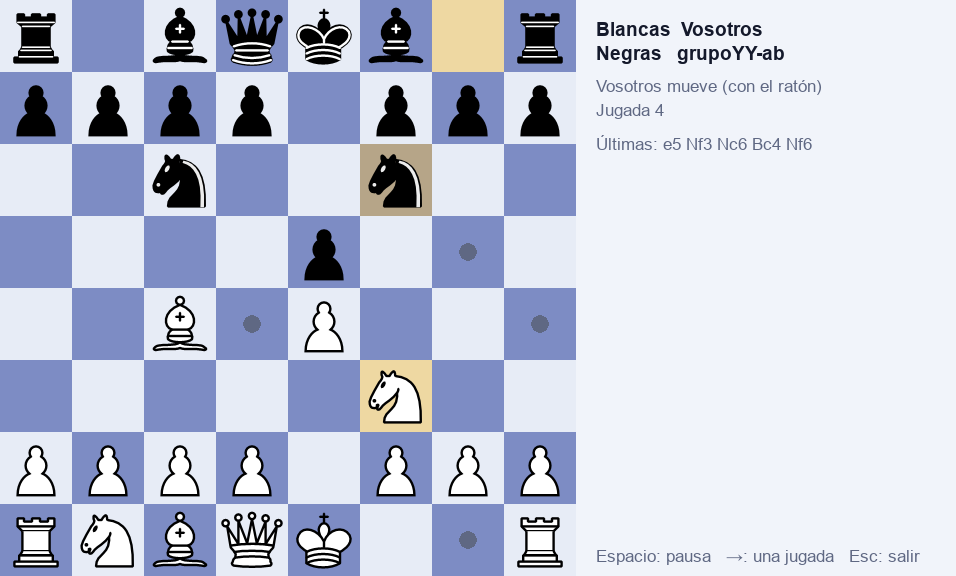

Práctica 5 paso a paso
Alfa-beta y MCTS en ajedrez, en Python: dos jugadores que se escriben por pasos, y después lo vuestro.
Un minimax con poda alfa-beta en tres pasos y un MCTS en seis, cada uno con su comprobación. Después,
experimentar con ellos y mejorarlos con alguno de los retos.
La práctica tiene cuatro partes. Las dos primeras son guiadas y traen la solución plegada; las otras dos son
vuestras. La guía entera vale 5 puntos y los retos, otros 5 (el reparto está en el
enunciado):
Esta práctica es en Python, y el entorno es el ajedrez. Las reglas (jugadas
legales, mate, enroque, captura al paso) las pone la biblioteca
python-chess; vosotros sólo decidís qué jugar.
jugador(): la versión que entregáis como la vuestra.
comprobar.py
Comprueba cada paso: python comprobar.py a2.
ver_partida.py, jugar_contra.py
Ver una partida, o jugarla vosotros.
comparar.py
Versiones contra los rivales, desde ocho aperturas y con los dos colores.
ajedrez/
El entorno: partidas, rivales y ventana. No se modifica.
Si algo no arranca
"python" no se reconoce como un comando (Windows): reinstalad marcando "Add python.exe to
PATH". Mientras, py suele funcionar en su lugar.
No module named 'chess': VS Code usa otro Python. Elegid el de .venv abajo a
la derecha, o con Python: Select Interpreter.
PowerShell no deja activar el entorno: una vez,
Set-ExecutionPolicy -Scope CurrentUser RemoteSigned. Desde los lanzadores no hace falta.
pygame-ce no se instala: vuestro Python es demasiado nuevo. Cread el entorno con 3.12 o
3.13.
Depurar
Lo que más ayuda es parar el programa y mirar el árbol. Poned un punto de ruptura (F9) en la última
línea de elegir del MCTS, lanzad Comprobar paso… con m6, y en el
panel Variables desplegad raiz: sus hijos, sus visitas, su valor. En la
Consola de depuración se puede escribir Python con las variables de ese momento, por ejemplo
[(h.jugada.uci(), h.visitas) for h in raiz.hijos].
Con Jupyter también se puede: cread el notebook dentro de ICI-Practica5 y usad
%run comprobar.py m3. Sólo comparar.py, que usa varios procesos, hay que lanzarlo
desde una terminal.
02
python-chess en cinco minutos
import chess
from ajedrez import material
t = chess.Board() # la posición inicial (o chess.Board(fen) para otra)
t.turn # a quién le toca: chess.WHITE (True) o chess.BLACK (False)not t.turn # el otro color
jugadas = list(t.legal_moves) # las jugadas legales: 20 al empezar
t.push(jugadas[0]) # hacer una jugada (modifica t)
t.pop() # deshacer la última
copia = t.copy(stack=False) # una copia sin el historial de jugadas: mucho más rápida
t.is_checkmate() # ¿el que tiene el turno está mateado?
t.is_stalemate() # ¿rey ahogado? (no tiene jugadas y no está en jaque)
t.is_insufficient_material() # ¿nadie puede dar mate? (rey contra rey, por ejemplo)
material(t, chess.WHITE) # material de blancas menos el de negras
chess.Move.from_uci("e2e4") # una jugada escrita a mano
t.san(jugadas[0]) # la jugada en notación de ajedrez: "Nh3"
material viene de la carpeta ajedrez: peón 1, caballo y alfil 3, torre 5, dama 9, lo
de un color menos lo del otro. Con una dama blanca de más, material(t, chess.WHITE) vale 9 y
material(t, chess.BLACK), −9.
Mateado es el que tiene el turno
Si t.is_checkmate() es verdad, el mateado es t.turn y el que ha ganado,
not t.turn. Este detalle decide si los pasos A1 y M1 salen bien o al revés.
03
Primera parte: minimax con alfa-beta
El jugador clásico: mirarlo todo hasta una profundidad fija, valorar con una heurística las posiciones donde se
corta y subir los valores con minimax. Está en grupoYY/minimax.py, con tres huecos. La clase
Minimax, que prueba cada jugada y se queda con la mejor, ya viene hecha.
Después de cada hueco, Comprobar paso… con su nombre. Sale A2: BIEN, o
A2: MAL. con lo que esperaba y lo que ha salido. Intentadlo antes de abrir la solución.
A1
Evaluar una posición
La heurística de serie es la más básica posible: el material. Si la partida ha terminado no hace falta
estimar: un mate vale MATE (1000) o -MATE, y unas tablas, 0.
Pista: primero el mate, luego las tablas, y si no, material(tablero, color).
Si os atascáis
def evaluar(tablero, color):
if tablero.is_checkmate():
return -MATE if tablero.turn == color else MATE
if tablero.is_stalemate() or tablero.is_insufficient_material():
return0return material(tablero, color)
A2
Minimax
minimax(tablero, profundidad, color) devuelve lo que vale la posición para color,
el que decide en la raíz. Donde mueve color (MAX), el mayor valor de los hijos; donde mueve el
rival (MIN), el menor. Con profundidad 0 o la partida acabada, evaluar.
La comprobación usa una posición con un peón envenenado. Las blancas tienen rey y dama (9); las negras,
rey y dos peones, en d5 y e6 (2). Vale 9 − 2 = +7 para las blancas. La dama puede comerse el peón de d5,
pero si lo hace, el de e6 se come a la dama.
8♚76♟5♟4321♛♚abcdefgh
La posición: 9 − 2 = +7
8♚76♟5♛4321♚abcdefgh
La dama come en d5: +8. Profundidad 1 se para aquí
8♚765♟4321♚abcdefgh
El peón de e6 come la dama: −1. Esto solo lo ve profundidad 2
Profundidad 1: solo se mira la jugada de las blancas. Tras comer quedan 9 − 1 = +8, y
no se ve nada más, así que minimax devuelve +8.
Profundidad 2: se mira también la respuesta de las negras. Si la dama come, el peón
la come a ella y quedan 0 − 1 = −1. Si la dama hace otra cosa, las negras no pueden comer nada y
sigue en +7. Lo mejor es no comer, y minimax devuelve +7.
Pista:tablero.push(jugada), la llamada con profundidad - 1 y
tablero.pop(). Pasad evaluar en la llamada recursiva: así podréis probar otras
heurísticas más adelante.
Si os atascáis
def minimax(tablero, profundidad, color, evaluar=evaluar):
if profundidad == 0or tablero.is_game_over():
return evaluar(tablero, color)
valores = []
for jugada in tablero.legal_moves:
tablero.push(jugada)
valores.append(minimax(tablero, profundidad - 1, color, evaluar))
tablero.pop()
return max(valores) if tablero.turn == color else min(valores)
A3
Alfa-beta
La poda de los apuntes: alfa, lo que MAX ya tiene asegurado; beta, lo que MIN ya
tiene asegurado. En un nodo de MAX cada hijo puede subir alfa, en uno de MIN puede bajar
beta, y cuando alfa >= beta sobran los hijos que quedan. Si no lo tenéis claro,
repasad la traza paso a paso. Recorred los hijos con
ordenar, que pone las capturas primero y así se poda antes.
La comprobación mira que dé lo mismo que minimax evaluando menos posiciones. Desde la posición
inicial, a profundidad 3, minimax evalúa 8 902 y alfa-beta, 519.
Si os atascáis
def alfabeta(tablero, profundidad, color, alfa=-math.inf, beta=math.inf, evaluar=evaluar):
if profundidad == 0or tablero.is_game_over():
return evaluar(tablero, color)
if tablero.turn == color: # MAX
mejor = -math.inf
for jugada in ordenar(tablero, list(tablero.legal_moves)):
tablero.push(jugada)
mejor = max(mejor, alfabeta(tablero, profundidad - 1, color, alfa, beta, evaluar))
tablero.pop()
alfa = max(alfa, mejor)
if alfa >= beta:
breakreturn mejor
mejor = math.inf # MINfor jugada in ordenar(tablero, list(tablero.legal_moves)):
tablero.push(jugada)
mejor = min(mejor, alfabeta(tablero, profundidad - 1, color, alfa, beta, evaluar))
tablero.pop()
beta = min(beta, mejor)
if alfa >= beta:
breakreturn mejor
Ya tenéis un jugador: Minimax(profundidad=2) mira su jugada y la respuesta, y
Minimax(poda=False) usa minimax a secas. Ponedlo en ver_partida.py y miradlo jugar.
04
Segunda parte: MCTS
El segundo jugador reparte el tiempo en miles de iteraciones de cuatro fases y hace crecer el árbol hacia lo que
promete. Está en grupoYY/mcts.py, con seis huecos, de m1 a m6.
El nodo
La plantilla trae la clase Nodo hecha:
class Nodo:
def __init__(self, tablero, padre=None, jugada=None):
self.padre = padre
self.jugada = jugada # la jugada que lleva del padre aquí
self.hijos = [] # los nodos ya creados debajo
self.sin_probar = list(tablero.legal_moves) # las jugadas que todavía no tienen hijo
random.shuffle(self.sin_probar)
self.visitas = 0# N: cuántas simulaciones han pasado por aquí
self.valor = 0.0# W: la suma de sus recompensas
self.color = not tablero.turn # quien hizo `jugada` (os hará falta en el reto "El rival también elige")
N son las visitas y W, la suma de recompensas; W/N es lo bien que le va. El nodo
no guarda el tablero, sólo la jugada: en cada iteración se copia el tablero de la raíz y se van haciendo las
jugadas al bajar. color es quien hizo la jugada que lleva al nodo; os hará falta en el reto
El rival también elige.
M1
La recompensa
El mismo material del paso A1, pero llevado a una escala de 0 (perdida) a 1 (ganada) con una
sigmoide: 1/(1+e−m/3), con m el material
del color que pregunta. Mate, 0 o 1; ahogado o material insuficiente, 0,5.
m = 0 (igualado) 0,50
m = 1 (un peón más) 0,58
m = 3 (un caballo más) 0,73
m = 5 (una torre más) 0,84
m = 9 (una dama más) 0,95
m = −3 (un caballo menos) 0,27
La recompensa según el material
Hace falta esa escala porque UCB1 suma la media con un término pensado para valores entre 0 y 1. Además, un
mate (1) vale siempre más que cualquier ventaja (0,95 como mucho). El 3 decide lo deprisa que sube la curva
(las dos punteadas de la gráfica usan 1,5 y 6), y es un parámetro que podéis tocar.
Si os atascáis
def recompensa(tablero, color):
if tablero.is_checkmate():
return0.0if tablero.turn == color else1.0if tablero.is_stalemate() or tablero.is_insufficient_material():
return0.5return1 / (1 + math.exp(-material(tablero, color) / 3))
M2
Selección: UCB1
Para un hijo h de un padre p, con Wh y
Nh el valor y las visitas del hijo, Np las visitas del padre y
c la constante de exploración (1,4 en la plantilla):
UCB1(h)=explotarNhWh+explorarcNhlnNp
El caso de la comprobación: un padre con 20 visitas, A con 6 de valor en 10 visitas y B con 4 en 5. Gana B,
que tiene mejor media y menos visitas:
Un hijo nuevo por iteración: sacar una jugada de nodo.sin_probar, hacerla en
tablero, crear el Nodo hijo, añadirlo a nodo.hijos y devolverlo.
Pista:sin_probar ya está barajada, así que pop() saca una al
azar. Primero tablero.push y después Nodo(tablero, …).
Si os atascáis
def expandir(nodo, tablero):
jugada = nodo.sin_probar.pop()
tablero.push(jugada)
hijo = Nodo(tablero, nodo, jugada)
nodo.hijos.append(hijo)
return hijo
M4
Simulación
En ajedrez, jugar al azar hasta el final no sirve: son cientos de jugadas y casi siempre acaba en tablas. Así
que se juegan como mucho profundidad medias jugadas al azar (10 en la plantilla) y se evalúa lo
que quede con recompensa, para color, que es siempre el que decide en la raíz.
Pista: un for; en cada vuelta, si no hay jugadas legales, break; si
no, random.choice y push. Usad la recompensa que llega como
parámetro.
Si os atascáis
def simular(tablero, profundidad, color, recompensa=recompensa):
for _ in range(profundidad):
jugadas = list(tablero.legal_moves)
ifnot jugadas:
break
tablero.push(random.choice(jugadas))
return recompensa(tablero, color)
M5
Retropropagación
El resultado sube del nodo nuevo a la raíz, y cada nodo del camino suma una visita y la recompensa. En esta
versión todo el árbol cuenta desde el que decide en la raíz: todos suman la misma r.
Si os atascáis
def retropropagar(nodo, r):
while nodo is notNone:
nodo.visitas += 1
nodo.valor += r
nodo = nodo.padre
Lo que esta versión hace mal, a propósito
En los niveles del rival, la selección también elige lo mejor para vosotros: el árbol supone un rival que
os ayuda. Es el error típico de los apuntes. Lo dejamos así
porque es lo más sencillo, y arreglarlo es el reto El rival también elige.
M6
El bucle
elegir repite iteraciones hasta que se acaba el tiempo. En cada una:
Selección: mientras el nodo no tenga jugadas sin probar y sí tenga hijos, bajar con seleccionar y hacer la jugada en t.
Expansión: si quedan jugadas sin probar, expandir.
Simulación desde t.
Retropropagación desde el nodo al que se ha llegado.
Lo de antes y después del bucle ya está: una copia del tablero por iteración y, al final, la jugada
más visitada, no la de mejor media, que con pocas visitas puede ser suerte. Si se llega a un
mate, no hay nada que expandir ni simular, y la recompensa sale exacta: por eso los mates se encuentran
enseguida.
Pista: siete líneas; la primera, while not nodo.sin_probar and nodo.hijos:. La
comprobación juega dos partidas contra Aleatorio y tarda unos 20 segundos.
Si os atascáis
# el bucle de elegir, sin el raise (allí va con dos sangrías más)whileTrue:
t = tablero.copy(stack=False)
nodo = raiz
whilenot nodo.sin_probar and nodo.hijos: # 1. selección
nodo = self.seleccionar(nodo)
t.push(nodo.jugada)
if nodo.sin_probar: # 2. expansión
nodo = self.expandir(nodo, t)
r = self.simular(t) # 3. simulación
self.retropropagar(nodo, r) # 4. retropropagación
n += 1if (self.iteraciones and n >= self.iteraciones) or \
(not self.iteraciones and time.perf_counter() > fin):
break
05
Verlo jugar y medirlo
Ver partida: poned vuestros jugadores en ver_partida.py, por ejemplo
BLANCAS = MCTS() y NEGRAS = Minimax(profundidad=2). Del MCTS se ven las jugadas que
más ha visitado. Espacio pausa, → avanza y Esc sale.
Jugar contra vuestro jugador: la forma más rápida de ver qué no entiende.
Comparar versiones: cada versión contra los rivales, 16 partidas por rival (ocho aperturas,
los dos colores), 0,3 segundos por jugada. Tarda unos minutos.
Ver partida: lo que pensó el MCTS en su última jugada
Las flechas son las tres jugadas más visitadas, y la gruesa es la que eligió. A la derecha están las ocho
primeras: la barra son las visitas y el porcentaje, el valor medio. Fijaos en lo cerca que están (39 contra
35 %): con 4298 iteraciones el MCTS apenas distingue entre comerse un peón y mover el rey. Mirarlo así
os dirá más que el resultado de la partida.
Jugar contra vuestro jugador: un caballo cogido con el ratón

Los rivales son Aleatorio, Voraz (la captura más valiosa, sin mirar qué le contestan) y
AlfaBeta2 (lo mismo que vuestro Minimax(profundidad=2)). Con las soluciones de la guía
sale esto:
Versión
Contra Voraz
Contra AlfaBeta2
MCTS()
94 % (14-2-0)
0 % (0-0-16)
Minimax(profundidad=2)
100 % (16-0-0)
62 % (8-4-4)
Minimax(profundidad=3)
100 % (16-0-0)
100 % (16-0-0)
Porcentaje de puntos, y entre paréntesis ganadas, tablas y perdidas. El MCTS es flojo en táctica porque hace la
media de las respuestas: si de 30 sólo una os come la dama, las otras 29 la tapan. Minimax mira todas y se queda
con la peor.
El margen
Con 16 partidas, el ± que da comparar.py es de unos 20 puntos. Pasar del 72 al 80 % no
demuestra nada; pasar del 0 al 30 % contra AlfaBeta2, sí.
06
Tercera parte: experimentad
Cada experimento es una versión más en VERSIONES y una pasada de comparar.py. Haced
al menos uno con cada algoritmo y apuntad en las notas qué salió.
La profundidad de alfa-beta
Probad profundidad 1, 2, 3 y 4, y mirad lo que tarda cada jugada. En un medio juego con 37 jugadas legales,
profundidad 3 tarda 0,06 s y profundidad 4, 0,56 s. Sin poda, profundidad 3 tarda 0,36 s. ¿Por qué
cada nivel cuesta tanto?
profundidad de la simulación: 0, 2, 10, 25. Con 0 no simula y cada hoja vale su evaluación.
c: 0,3, 1,4 y 3. Mirad cómo cambian las barras en Ver partida.
El tiempo: TIEMPO a 0,1 y a 1 en comparar.py. El MCTS mejora con el tiempo; el
minimax mira su profundidad tarde lo que tarde.
Los apuntes tienen nuestras medidas, con otra versión del MCTS. Mirad si
con la vuestra pasa lo mismo.
Una heurística
Un ejemplo muy básico: ocupar el centro es bueno. Sumad al material las piezas propias en las cuatro casillas
centrales, menos las del rival, con un peso pequeño:
from ajedrez import material
from grupoYY.minimax import MATE, evaluar
CENTRO = [chess.D4, chess.E4, chess.D5, chess.E5]
def centro(tablero, color):
"""Piezas propias en el centro menos las del rival."""
total = 0for casilla in CENTRO:
pieza = tablero.piece_at(casilla)
if pieza:
total += 1if pieza.color == color else -1return total
def evaluar_centro(tablero, color):
v = evaluar(tablero, color) # el material, o ±MATE, o 0 en tablasif abs(v) == MATE:
return v
return v + 0.1 * centro(tablero, color)
Se usa con Minimax(evaluar=evaluar_centro). Para el MCTS, una recompensa_centro como
la del paso M1 con material(tablero, color) + 0.1 * centro(tablero, color) dentro de la sigmoide, y
MCTS(recompensa=recompensa_centro). Con esta heurística no medimos ninguna diferencia: es un ejemplo
de cómo se mete una, no de una buena.
07
Cuarta parte: los retos
Los retos son misiones, y cada una da un cristal. Entre todos dan los otros 5 puntos de la práctica, y cuentan
como mucho tres:
Azulmuy sencillo · 1,75
Violetafácil · 2,5
Doradodifícil · 5
Un dorado o dos violetas ya llegan a 5. Una misión cuenta si la habéis probado y medido, aunque no
mejore nada. También vale una vuestra: preguntadme antes de qué color es.
Casi todas se hacen igual: una clase hija de MCTS o de Minimax que cambia sólo lo que
dice la misión (debajo de la original, en el mismo fichero), y una pasada de comparar.py con las dos
versiones. Cuando una misión pide medir "contra el MCTS de la guía", ponedlo también como rival:
En el MCTS de la guía, todos los nodos guardan las recompensas desde vuestro punto de vista, y la selección siempre baja por el hijo con más media. En los niveles en que movéis vosotros está bien. Pero en los niveles en que mueve el rival, eso es suponer que el rival elige lo mejor para vosotros:
Con la guía, el MCTS visita sobre todo la respuesta A y cree que e4 vale casi 0,90: juega esperando un regalo. Lo que hay que hacer: en los niveles del rival, que la selección use 1 - media en vez de la media. Una media de 0,90 para vosotros es 0,10 para él. Los apuntes lo cuentan en quién gana en cada nodo.
¿Cómo sabéis quién elige en un nodo? nodo.color es quien hizo la jugada que lleva a él. Si nodo.color == self.yo, esa jugada fue vuestra, así que ahora elige el rival.
Para conseguirlo: una clase MCTSRival que cambia la selección, enfrentada al MCTS de la guía (en RIVALES). Contra los rivales de referencia apenas se nota; contra el de la guía, a nosotros nos ganó el 66 %.
Pista
No hace falta tocar el árbol ni la retropropagación: sólo cómo se elige el hijo. Lo más corto es una clase hija que redefine seleccionar.
funciónseleccionar(nodo):
para cada hijo de nodo:
media = W / N del hijo
si en nodo elige el rival:
media = 1 − media
puntos(hijo) = media + exploración la misma que en UCB1devolver el hijo con más puntos
Vuestra heurística +2,5Los dos
evaluar y recompensa sólo cuentan piezas. Dos posiciones con el mismo material les parecen iguales, aunque en una estéis a punto de ganar:
8♚7♟♟♟♟6♟5432♟♟♟1♚abcdefgh
Material: 4 − 4 = 0. Pero el peón de b7 corona en la jugada siguiente
Lo que hay que hacer: sumar al material algo que vosotros sepáis de ajedrez, con un peso pequeño, como evaluar_centro en la tercera parte. Algunas ideas:
Peones que avanzan: por cada peón, cuántas filas ha subido. En el tablero de arriba, con 0,1 por fila, el de b7 suma 0,5.
Movilidad: cuántas jugadas legales tenéis, menos cuántas tiene el rival.
El par de alfiles: medio punto si conserváis los dos.
El rey protegido: cuántos peones propios tiene delante.
El peso tiene que ser pequeño: un peón de verdad debe seguir valiendo más que vuestro término.
Para conseguirlo: un término vuestro (el centro de la guía no vale), y en VERSIONES el mismo jugador con la heurística de la guía y con la vuestra. La tabla dirá cuál gana más.
Pista
tablero.pieces(chess.PAWN, color) da las casillas de vuestros peones, y chess.square_rank(casilla), su fila, de 0 a 7. Ojo con las negras, que avanzan hacia abajo. Cada término se calcula en cada hoja: mirad también si el jugador se vuelve más lento.
funciónevaluar_mia(tablero, color):
v = evaluar(tablero, color)
si v es un mate:
devolver v un mate no se tocadevolver v + peso · mi_termino(tablero, color)
funciónmi_termino(tablero, color):
devolver lo que cuenta para color − lo mismo para el rival
Simulaciones que capturan +2,5MCTS
La simulación juega al azar. Mirad lo que pasa con una dama regalada:
8♜♞♝♚♝♞♜7♟♟♟♟♟♟♟65♟4♟3♛2♟♟♟♟♟♟♟1♜♞♝♛♚♝♜abcdefgh
La dama negra de f3 está regalada. Sólo 2 de las 23 jugadas la comen: al azar, el 9 %
Nueve de cada diez simulaciones siguen como si nada, y lo mismo pasa en cada jugada de la simulación: los dos bandos dejan piezas colgadas y nadie se las come. El resultado de la simulación se parece poco a lo que pasaría en una partida de verdad.
Lo que hay que hacer: que la simulación, cuando pueda capturar, capture casi siempre (por ejemplo, el 80 % de las veces) y elija la pieza más valiosa. El resto de las veces, al azar, para que no salga siempre la misma partida.
Para conseguirlo: una clase MCTSCapturas que cambia la simulación, contra el MCTS de la guía. Apuntad también cuántas iteraciones hace por jugada (iteraciones_hechas): mirar las capturas cuesta, y saldrán menos.
Pista
tablero.is_capture(jugada) dice si una jugada captura, y tablero.piece_at(jugada.to_square), qué pieza hay en el destino (en la captura al paso no hay ninguna). Si salen pocas iteraciones, probad una profundidad menor.
funciónsimular(tablero):
repetir como mucho profundidad veces, mientras queden jugadas:
capturas = las jugadas legales que capturan
si hay capturas y un número al azar < 0,8:
jugar la captura de la pieza más valiosa
si no:
jugar una jugada al azar
devolverrecompensa(tablero, yo)
Gestionar el tiempo +1,75Los dos
Ahora vuestros jugadores piensan igual en todas las jugadas: el MCTS gasta siempre casi todo el tiempo, y alfa-beta mira siempre a la misma profundidad. Pero no todas las jugadas lo merecen. Haced que vuestro jugador decida cuánto pensar según la jugada, con alguna regla como estas:
Una sola jugada legal (por ejemplo, para salir de un jaque): devolvedla sin pensar.
MCTS, ya decidido: si la segunda no puede alcanzar a la primera aunque se lleve todas las iteraciones que quedan, parad ahí. Con los números del dibujo:
Alfa-beta con pocas piezas: con 10 o menos en el tablero hay pocas jugadas y cada nivel cuesta poco. Subid un nivel de profundidad.
Las dos primeras ahorran tiempo; la tercera lo gasta donde antes sobraba. Ojo: una jugada que tarda más de 1,5 veces su tiempo pierde la partida.
Para conseguirlo: una regla como mínimo, y dos pasadas de comparar.py, sin ella y con ella. Contad cuántos minutos tarda cada pasada (lo dice al acabar) y si cambian los puntos.
Pista
Para contar piezas, len(tablero.piece_map()). Para el MCTS, pensad cuántas iteraciones os caben en el tiempo que queda, sabiendo cuántas lleváis y cuánto habéis tardado.
si sólo hay una jugada legal:
devolver esa jugada sin crear el árboldentro del bucle del MCTS, cada cierto número de iteraciones:
caben = iteraciones hechas / tiempo pasado · tiempo que queda
si visitas de la segunda + caben < visitas de la primera:
parar ya no puede cambiar
Reaprovechar el árbol del MCTS +2,5MCTS
Cada vez que os toca, elegir crea una raíz nueva y empieza de cero. Pero el árbol de vuestra jugada anterior ya había mirado la posición en la que estáis ahora: está dos niveles más abajo, tras vuestra jugada y la respuesta del rival.
Lo que hay que hacer: guardar el árbol en el objeto y, al empezar la jugada siguiente, bajar por vuestra jugada y por la del rival. Si ese nodo está, es la nueva raíz y ya trae sus visitas. Si el rival jugó algo que el árbol no había probado, de cero.
Para conseguirlo: una clase MCTSArbol que reutiliza el árbol, contra el MCTS de la guía. Imprimid cuántas visitas trae la raíz al empezar: si casi siempre son 0, algo falla.
Pista
tablero.move_stack es la lista de jugadas de la partida: las dos últimas son la vuestra y la del rival. Cuidado con la retropropagación: tiene que parar en la nueva raíz.
funciónelegir(tablero, tiempo):
raíz = un nodo nuevo con tablero
si hay un árbol guardado:
mía, suya = las dos últimas jugadas de la partida
buscar en el árbol el hijo de mía y, dentro, el de suya
si está:
raíz = ese nieto, sin padre
el bucle de siempre, desde raíz
guardar raíz para la jugada siguiente
devolver la jugada más visitada
Profundización iterativa +2,5Alfa-beta
Minimax(profundidad=3) mira siempre 3 niveles, le sobre tiempo o no. Y lo que tarda cada nivel cambia mucho: cada uno cuesta unas diez veces el anterior.
Medido en el medio juego de comprobar.py, con 37 jugadas legales. En vuestro ordenador serán otros números, y en un final con pocas piezas, mucho menores.
Lo que hay que hacer: buscar a profundidad 1, luego a 2, luego a 3… mientras quede tiempo, y jugar lo que dijo la última búsqueda que terminó entera. Para no pasarse: si lo que queda es menos de diez veces lo que tardó la última, no empecéis otra.
Para conseguirlo: una clase MinimaxIterativo que sube la profundidad mientras le quede tiempo, contra Minimax(profundidad=2) y Minimax(profundidad=3), sin perder ninguna partida por tiempo.
Pista
Minimax.elegir usa self.profundidad. Y mirad primero la mejor jugada de la búsqueda anterior: así se poda más.
funciónelegir(tablero, tiempo):
profundidad = 1
repetir:
buscar a profundidad y apuntar la mejor jugada y cuánto ha tardadosi lo que queda < 10 · lo que ha tardado:
parar
profundidad = profundidad + 1
devolver la mejor jugada de la última búsqueda entera
Tabla de transposiciones +5Alfa-beta
A una misma posición se llega por caminos distintos. Estas dos secuencias acaban en el mismo tablero:
8♜♞♝♛♚♝♜7♟♟♟♟♟♟♟♟6♞543♞♞2♟♟♟♟♟♟♟♟1♜♝♛♚♝♜abcdefgh
El mismo tablero por los dos caminos
Alfa-beta no lo sabe y calcula la posición una vez por cada camino. Y pasa muchísimo: desde la posición inicial, a 4 medias jugadas hay 197 281 caminos pero sólo 72 078 posiciones distintas. Casi dos de cada tres ya se habían calculado.
Lo que hay que hacer: un diccionario que apunte lo que valió cada posición. Antes de calcular una, se busca; si está, se usa ese valor. Hay dos trampas:
La profundidad. Un valor calculado mirando 1 nivel no sirve cuando ahora hay que mirar 3. Guardad también la profundidad junto al valor, y usadlo sólo si se miró igual o más.
La poda. Cuando alfa-beta corta una rama, el valor que devuelve no es exacto: es sólo "por lo menos esto" o "como mucho esto". Sólo es exacto si queda entre el alfa y la beta con los que se llamó. Guardad sólo esos.
Para conseguirlo: alfa-beta con tabla, contando cuántas posiciones se encuentran en la tabla y cuántas se calculan. A profundidad fija la jugada no cambia, sólo el tiempo: medid lo que tarda una jugada a profundidad 4, con tabla y sin ella. Si además la juntáis con la profundización iterativa, ese tiempo se convierte en profundidad, y la profundidad en puntos. Para medir el tiempo:
import time, chess
from grupoYY.minimax import Minimax
t = chess.Board("r1bq1rk1/pp2bppp/2n1pn2/3p4/2PP4/2N1PN2/PP3PPP/R2QKB1R w KQ - 09")
inicio = time.perf_counter()
Minimax(profundidad=4).elegir(t, 1)
print(time.perf_counter() - inicio, "segundos")
Pista
chess.polyglot.zobrist_hash(tablero) (con import chess.polyglot) da un número distinto para cada posición: sirve de clave. Empezad guardando sólo lo que devuelve evaluar en profundidad 0, donde no hay ni profundidad ni poda que liar.
funciónalfabeta(tablero, profundidad, color, alfa, beta):
clave = el número de la posición
si clave está en la tabla y se guardó con una profundidad ≥ profundidad:
devolver su valor
v = el cálculo de siempre
si alfa < v < beta: el alfa y la beta con que se llamó
guardar (v, profundidad) con clave
devolver v
Búsqueda de quietud +5Alfa-beta
Alfa-beta mira hasta su profundidad y ahí llama a evaluar, pase lo que pase en el tablero. Si la última jugada que mira es una captura, evaluar cuenta la pieza comida, pero no ve que os la devuelven en la jugada siguiente. Con las blancas a profundidad 1:
8♚7♟6♞54321♛♚abcdefgh
La posición: 9 − 4 = +5
8♚7♟6♛54321♚abcdefgh
La dama come el caballo: 9 − 1 = +8. Aquí se acaba la profundidad
8♚76♟54321♚abcdefgh
El peón come la dama: −1. Alfa-beta no llega a verlo
Es el peón envenenado del paso A2, pero no se arregla subiendo la profundidad: con 3, el problema pasa a la tercera jugada; con 4, a la cuarta. Siempre hay una última jugada.
Lo que hay que hacer: al llegar a profundidad 0, en vez de evaluar sin más, seguir mirando sólo las capturas hasta que no quede ninguna. Las capturas se acaban pronto, así que esto no se alarga mucho. En el ejemplo:
Tras Qxc6 se acaba la profundidad, pero hay una captura (bxc6): se sigue mirando.
Tras bxc6 no quedan capturas: evaluar dice −1.
En Qxc6 eligen las negras: no capturar (+8) o capturar (−1). Eligen −1.
Qxc6 vale −1, y las blancas no la juegan.
Fijaos en el paso 3: quien mueve no está obligado a capturar. En cada posición, el valor de partida es evaluar tal cual (como si no capturara), y las capturas sólo cuentan si le salen mejor.
Para conseguirlo: la búsqueda de quietud dentro de vuestro alfabeta, medida contra el mismo jugador sin ella. Cuesta tiempo, así que probad también con un nivel menos de profundidad.
Pista
Se parece mucho a alfabeta, pero sin profundidad y sólo con capturas. Pensad cuál es el valor de partida si nadie captura.
funciónquietud(tablero, color, alfa, beta):
v = evaluar(tablero, color) lo que vale si nadie capturapara cada captura, las más valiosas primero:
hacerla, w = quietud(…), deshacerla
si mueve color: v = máx(v, w) si no: v = mín(v, w)
subir alfa o bajar beta, y si alfa ≥ beta: cortar
devolver v
enalfabeta, con profundidad 0:
devolverquietud(…) en vez de evaluar(…)
Minimax implícito +5MCTS
En el MCTS, lo que vale un nodo es la media de sus simulaciones. La media tarda en reaccionar: si una sola respuesta del rival tumba vuestra jugada, se diluye entre todas las demás visitas. Minimax implícito guarda en cada nodo, además, un segundo valor calculado como en minimax: en un nodo nuevo, la recompensa de la posición; en los demás, el mejor de sus hijos para quien elige en ese nodo. La selección mezcla los dos con un peso que llamaremos α, entre 0 y 1:
valor = (1 − α) · media + α · minimax
Un ejemplo:
media de e4 tras 100 visitas: 0,62
minimax de e4 (la mejor respuesta rival): 0,20
con α = 0,8: 0,2 · 0,62 + 0,8 · 0,20
= 0,124 + 0,16
= 0,28
La media dice que e4 está bien; minimax ha encontrado una respuesta que la tumba, y la mezcla le hace caso. Los apuntes lo explican con una demo en minimax implícito. Es lo que más subió contra AlfaBeta2 cuando preparamos la práctica.
Para conseguirlo: el minimax implícito, con un α elegido midiendo (al menos tres valores), contra el MCTS de la guía y contra AlfaBeta2.
Pista
Necesita antes el reto El rival también elige, porque minimax tiene que saber quién elige en cada nivel. Empezad con α = 0,8.
al expandir un hijo:
hijo.minimax = recompensa de su posición
al retropropagar, en cada nodo que ya tiene hijos:
nodo.minimax = el mejor hijo.minimax para quien elige en nodo
al seleccionar:
puntos(hijo) = (1 − α) · media + α · minimax + exploración
Un híbrido +2,5Los dos
Cada algoritmo falla en algo distinto. El MCTS ve lejos, pero sus simulaciones al azar no ven una pieza colgada (lo de "Simulaciones que capturan"). Alfa-beta no se deja ni una táctica corta, pero no ve más allá de su profundidad. La idea: un MCTS que, en vez de simular al azar, valora el nodo nuevo con un alfa-beta corto.
Selección
Expansión
Simulación al azarAlfa-beta de profundidad 2
Retropropagación
El valor de alfa-beta va en puntos de material, así que hay que pasarlo por la sigmoide del paso M1 para que quede entre 0 y 1.
Para conseguirlo: una clase MCTSAlfaBeta con la simulación cambiada, contra los dos jugadores de la guía (los dos en RIVALES). Apuntad cuántas iteraciones hace por jugada.
Pista
Redefinid simular en una clase hija. Cada iteración será mucho más cara que una simulación al azar: probad profundidad 1 y 2.
funciónsimular(tablero):
v = alfabeta(tablero, 2, yo) en puntos de material, o ±MATEdevolver la sigmoide de v como en el paso M1
08
Cómo organizar las versiones
Cada versión tiene que seguir existiendo cuando hagáis la siguiente, para poder compararlas. Si cambia un
parámetro o la heurística, basta con crear el jugador con otro valor:
Si cambia cómo funciona, una clase que hereda y redefine sólo lo que cambia. En MCTS, las cuatro
fases son métodos; en Minimax, valor y elegir:
class MCTSAlterno(MCTS):
"""Reto 1: el rival también elige."""def seleccionar(self, nodo):
... # vuestra versión
Para enfrentar dos versiones vuestras, meted la anterior en RIVALES, por ejemplo
"mcts-guía": lambda: MCTS(). Así se ven diferencias que contra Voraz o AlfaBeta2 no salen.
Al poner vuestra letra
Si renombráis grupoYY, cambiad también los import de comprobar.py,
ver_partida.py, jugar_contra.py y comparar.py
(Ctrl+Shift+H los cambia de una vez). Dentro del paquete, importad con un
punto: from .mcts import MCTS.